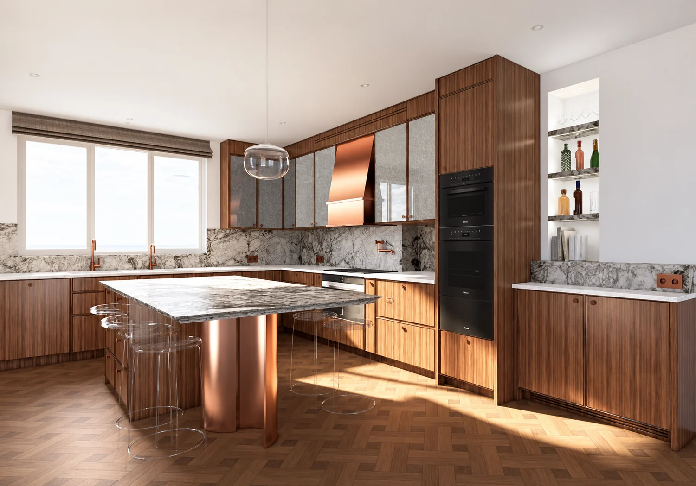

Stouls Studio / Services
Two ways to work with me, one finished apartment
Either I start by finding the apartment, or I start with the one you already own. In both cases I carry the project to the day I hand you the keys, so that you have as little as possible to manage.
The two options
Option 1
From the search to the keys
For buyers who have not found their apartment yet.
- Apartment search
- Assessing the apartment’s potential
- Design and technical drawings
- Materials, furniture and decoration
- Final quote
- Site supervision
- Furnishing and handover
Option 2
Full renovation of an apartment you own
For owners who already have the keys.
- Study of the apartment and brief
- Design and technical drawings
- Materials, furniture and decoration
- Final quote
- Site supervision
- Furnishing and handover
Each step, in detail
Apartment search Option 1
I take your brief, follow the market and visit in person.
Apartment search in ParisAssessing the apartment’s potential Option 1
For each apartment worth studying: my opinion, what could be done with it and a first idea of the cost.
Study of the apartment and brief Option 2
A visit, a survey, and a clear brief for the project.
Design and technical drawings
The new layout, then the renovation plans and the elevations of the kitchen, the bathrooms and every piece of millwork. Drawn for the building as it is, with its beams, chimneys and load-bearing walls.
Design and renovationMaterials, furniture and decoration
Floors, tiles, faucets, lights, fabrics, furniture and objects are chosen with you during the design and listed with the technical drawings, so the quote covers what you actually picked.
Final quote
Drawn up once the technical drawings are finished, so the price matches the project.
Site supervision
Regular visits to the job site, a written report every week or every two weeks depending on the stage of the work, and photographs.
Furnishing and handover
Furniture, lights, curtains, linens, dishes: ordered, delivered, assembled and placed. Everything is checked, and I hand you the keys.

How we work together
During the design
- Regular meetings, closer together or farther apart depending on the stage of the project.
- WhatsApp between meetings, in a group set up for the project if you like, to confirm choices and keep moving.
- A set of technical drawings: the plans the renovation needs, in particular the renovation plans and the elevations, with the list of materials, furniture and fixtures chosen.
- You approve and sign the drawings before work starts. The final quote comes once they are finished.
During the renovation
- A written report every week or every two weeks, depending on the stage of the work and what there is to tell you.
- Photographs of the job site, sent regularly.
- Meetings at the apartment when you are in Paris. When you are not, we meet by video call, and I send videos when they are needed.
What this takes off your shoulders
A renovation is hundreds of small decisions, a dozen trades and a building with its own rules. I handle all of it: I prepare the choices, put them to you with a picture and a price, and follow the work until the apartment is handed over.
You decide, you are kept informed, and you have no one to chase. I am the buffer between you and the contractors: I check the work against the drawings you approved and follow up until each point is settled.
The rooms in 3D, before anything is built



These three images are 3D models, not photographs. Where it helps, I model the rooms during the design, so you can see a room and change your mind while it still costs nothing.
Types of projects
Primary residence
An apartment to live in all year, redrawn around your daily life.
Pied-à-terre
A second home in Paris for regular stays.
A pied-à-terre in ParisRental investment
An apartment designed and furnished to be rented.
Rental investment in ParisResale
An apartment bought to be renovated and sold.
Clients in Paris and abroad
Many of the studio’s clients live abroad and follow their project from a distance, in English or in French. Others live in Paris and come to every meeting at the apartment. The method is the same, and so is the work: see the portfolio.
More on each stage: the apartment search and the renovation.
Questions about working together
Which of the two should I choose?
It depends only on whether you have an apartment. If you are still looking, the first one starts with the search. If you own it or have signed for it, the second one starts with a study of the apartment. From the design onward the two are the same.
Can I take only part of it?
Yes. Some clients ask for the design and the technical drawings alone, or for a partial renovation of a few rooms. Say what you need and I will tell you what I can take on.
Do I have to be in Paris?
No. Meetings can be held by video call, decisions are confirmed by WhatsApp, and during the renovation you receive reports, photographs and, when needed, videos of the apartment. When you are in Paris, we meet at the apartment.
When do I know the final price?
When the technical drawings are finished and signed. The final quote is based on them, so it prices the project you approved and nothing else. Before that, you work with estimates.